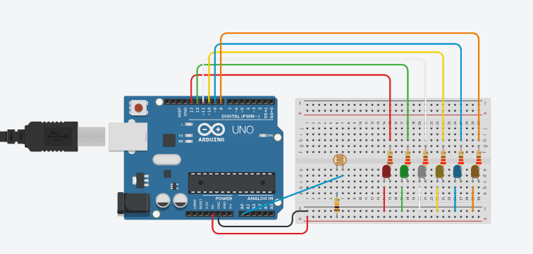
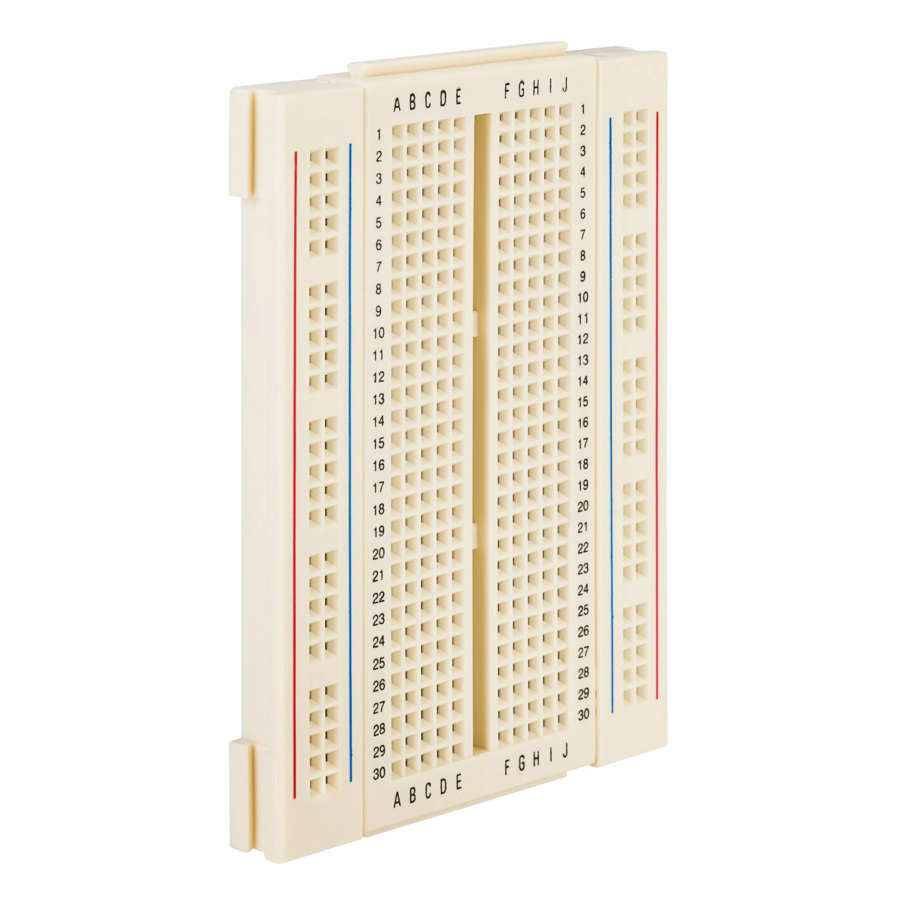
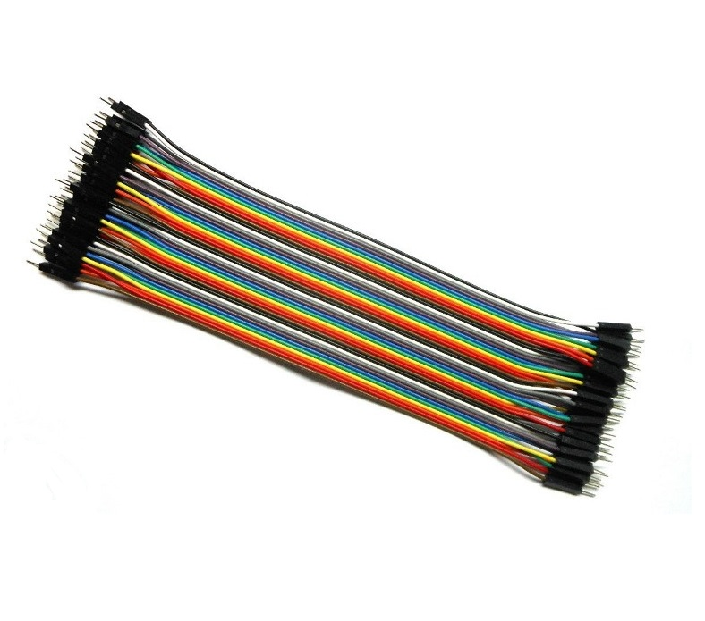

📚 Maqueta de una casa con Leds que prenden con una fotorresistencia
En este apartado se explicara como se diseño la maqueta de una casa con luzes automaticas por medio del uso de una fotorrsistencia
Explicación
Explicacion de la maqueta
El circuito sirve principalmente con unos LDEs, cables*Jumpers*, Protoboard, Arduino y una fotorresistencia. El objetivo principal de este circuito es el hacer que unos seies LEDs prensan en el momento que se apaguen las luces y estos entren en osuridad, esto es logrado gracias a la fotrresistencia que esta programada con Arduino IDE y asi poder detectar el momento donde se apague y prenda.
- 600) { digitalWrite(rojo,HIGH); digitalWrite(verde,HIGH); digitalWrite(blanco,HIGH); digitalWrite(amarillo,HIGH); digitalWrite(azul,HIGH); digitalWrite(naranja,HIGH); } else { digitalWrite(rojo,LOW); digitalWrite(verde,LOW); digitalWrite(blanco,LOW); digitalWrite(amarillo,LOW); digitalWrite(azul,LOW); digitalWrite(naranja,LOW); } }
Diagrama en Tinkercad
Grafica del diseño en Tinkercad.

- MATERIALES
- LEDs
- Cables*Jumpers*
- Protoboard
- Arduino
- Fotorresistencia
Diseño de la maqueta
La maqueta se empezo con una caja de un tamaño mediano*como de galleta pero un poco mucho mas grande*, se abrio por la parte de arriba con un cuchillo para darle una forma de una casa un toque minimalista se le pego un carton en la parte de abajo del resto de la caja para asi simular una especie de jardin o patio, kuego se hicieron averturas en la caja para simular unas puertas y ventanas. Luego se hizo un agujero en la parte de atras de la caja de un tamaño grande para poder meter la protoboard y el Arduino y empezar a pegar los LEDs y los Jumpers de manera escondida en varias partes de la casa, luego donde deberia ir las puertas y las ventanas se le pego un unos plasticos para simular cristal y se escondio la fotorresistencia en dentro con un orificio con unos cables para simular una especie de antena. Tambien se pinto de un color gris.
Lista de materiales
- Arduino UNO
- Protoboard
- Jumpers
- LEDs(un total de 6)
- Resistencias de 220 Ohmos
- Fotorresistencias



Los materiales de la construccion de la maqueta
- Una caja de carton de tamaño pequeña.
- Un Cuter
- laminas de plastico
- Cinta adesiva
- cuchillo